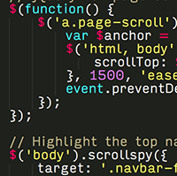

About
I'm a NYC-based unior Full-Stack Web Developer with a passion for interactive storytelling and journalism.
The Dream
I want to use my skills in web development to create interactive, meaningful narratives and to solve problems for everyday people. I am also passionate about getting women involved in the tech industry.
Journalism
As an undergraduate, I majored in Culture & Media Studies and Journalism. Writing is the passion that led me to web development. I believe that journalists must make narratives "of the web", utilizing its inherent interactive qualities, rather than publishing stories simply on the web.
Skills
My Stack
Ruby
Ruby on Rails
JavaScript
Backbone.js
PostgreSQL
HTML5
CSS3
Bootstrap
Heroku | Deployment
Github | Git
Agile Methodologies
Command Line
Portfolio
A sample of my work in web development and writing.

froogalr
Find cheap eats in NYC for under $15.

deeds
A collaborative economy made easy.

Scholarships for Women in Tech Are an Important Stepping Stone
Article in WSJ Accelerators Blog

Oh SNAP!
A “simulator data toy” to see how Food Stamps affect families and children in America.

New School Free Press
Redesigned Website as Edior-in-Chief
Gear Up
Exploring How Education Levels Impact Employment Opportunities
Alexandra Ackerman
My Story
-

1992-2010
My Beginning
I was born and raised in Virginia Beach, Virginia, where I attended a private Quaker school for 13 years. I moved to NYC upon graduating in 2010 with a 4.08 GPA.
-

August 2010 - May 2014
College in NYC
As an undergraduate at The New School University, I majored in Culture & Media Studies and Journalism, graduating with honors (3.92 GPA) in May 2014 and earning two awards for academic excellence in addition to my previously held scholarships.
-

June 2014 - September 2014
Web Development Immersive @ GA
After graduating from college, I realized that I was interested in web development. I applied to General Assembly's WDI and was awarded one of Google's Opportunity Fund Fellowships for Women. WDI is a 12-week intensive from 9-5:30, five days a week, including 20+ hours of outside programming practice.
-

September 2014 - Beyond
Ready to Change the World
What's the bottom line? I want to use the web development skills I have learned in create interactive stories and solve complex problems. I want to help as many people as possible by providing great products.
-
Be Part
Of My
Story!